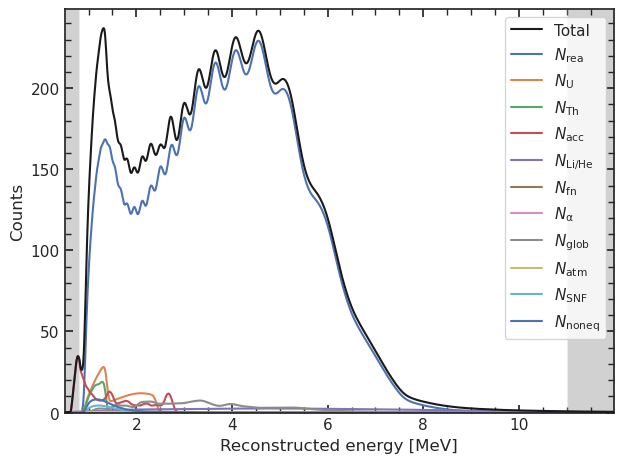
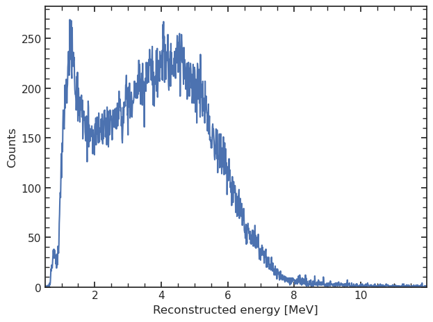
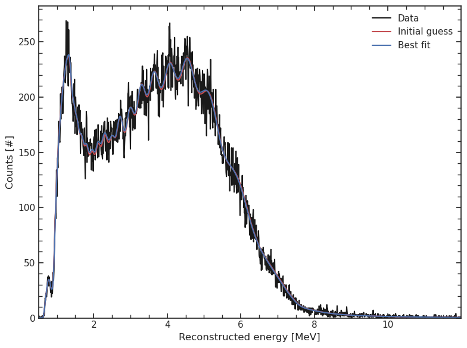
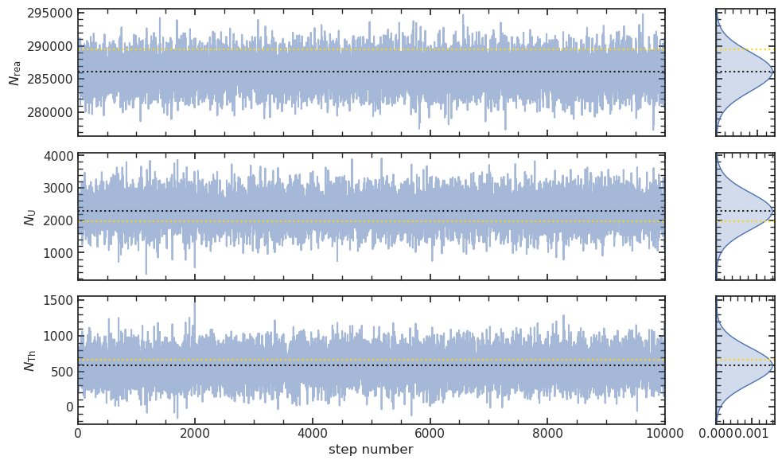
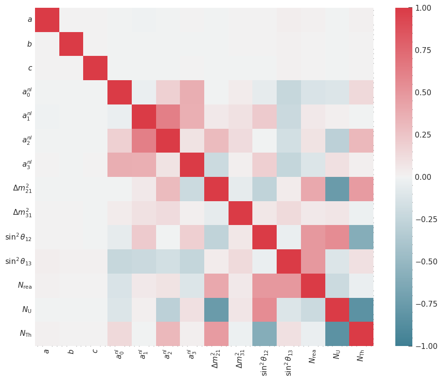

Plot your results#
[1]:
import orsa
import numpy as np
import pandas as pd
import numpy as np
import matplotlib.pyplot as plt
import seaborn as sns
import matplotlib as mpl
sns.set(style = 'white')
mpl.rc('xtick.minor', visible = True)
mpl.rc('ytick.minor', visible = True)
mpl.rc('xtick', direction='in', top=True, bottom = True)
mpl.rc('ytick', direction='in', right=True, left = True)
print(orsa.__version__)
0.7.0
[2]:
model = orsa.model.read_json('0_test_model.json')
model.exposure = 6*365.25
model

[2]:
<orsa.model.model.Model at 0x7f544ffa0fa0>
[3]:
model

[3]:
<orsa.model.model.Model at 0x7f544ffa0fa0>
[4]:
data = model.get_spectrum(asimov = False)
data

[4]:
<orsa.spectrum.spectrum.ReconstructedSpectrum at 0x7f53e86cf040>
[5]:
for param in model.detector_parameters:
model.detector_parameters[param].fixed = True
for param in model.core_parameters:
model.core_parameters[param].fixed = True
for param in model.normalization_parameters:
if model.normalization_parameters[param].label not in ['rea', 'U', 'Th']:
model.normalization_parameters[param].fixed = True
model.parameters['rho'].fixed = True
[6]:
init_model = model.copy()
min_func_bin = orsa.probability.CostFunction(ll=orsa.probability.chi2, ll_args=dict(data=data), lp_args=model.get_priors())
model.use_shape_uncertainty = False
res = orsa.fit.minuit(model, min_func_bin)
Cost function parsed as chi2-like
[7]:
res.obj
[7]:
| Migrad | ||||
|---|---|---|---|---|
| FCN = 951.6 | Nfcn = 175 | |||
| EDM = 1.83e-05 (Goal: 0.0002) | time = 2.0 sec | |||
| Valid Minimum | No Parameters at limit | |||
| Below EDM threshold (goal x 10) | Below call limit | |||
| Covariance | Hesse ok | Accurate | Pos. def. | Not forced |
| Name | Value | Hesse Error | Minos Error- | Minos Error+ | Limit- | Limit+ | Fixed | |
|---|---|---|---|---|---|---|---|---|
| 0 | dm2_21 | 75.35e-6 | 0.21e-6 | |||||
| 1 | dm2_31 | 2.529e-3 | 0.004e-3 | |||||
| 2 | s2_12 | 0.3056 | 0.0016 | |||||
| 3 | s2_13 | 0.0251 | 0.0024 | |||||
| 4 | rea | 291.0e3 | 2.3e3 | |||||
| 5 | U | 1.85e3 | 0.33e3 | |||||
| 6 | Th | 0.59e3 | 0.12e3 |
| dm2_21 | dm2_31 | s2_12 | s2_13 | rea | U | Th | |
|---|---|---|---|---|---|---|---|
| dm2_21 | 4.52e-14 | -0.01e-12 (-0.011) | -67.77e-12 (-0.201) | -23.45e-12 (-0.046) | 173.55482968e-6 (0.352) | -49.76794597e-6 (-0.714) | 5.27342149e-6 (0.199) |
| dm2_31 | -0.01e-12 (-0.011) | 1.31e-11 | 0.163e-9 (0.028) | 0.132e-9 (0.015) | 172.473433e-6 (0.021) | 13.746774e-6 (0.012) | -3.923121e-6 (-0.009) |
| s2_12 | -67.77e-12 (-0.201) | 0.163e-9 (0.028) | 2.51e-06 | -0.1e-6 (-0.031) | 1.9105643 (0.521) | 211.4293e-3 (0.408) | -82.1741e-3 (-0.417) |
| s2_13 | -23.45e-12 (-0.046) | 0.132e-9 (0.015) | -0.1e-6 (-0.031) | 5.72e-06 | 2.811868 (0.508) | 27.545e-3 (0.035) | 6.635e-3 (0.022) |
| rea | 173.55482968e-6 (0.352) | 172.473433e-6 (0.021) | 1.9105643 (0.521) | 2.811868 (0.508) | 5.37e+06 | -0.14e6 (-0.186) | -0.035e6 (-0.121) |
| U | -49.76794597e-6 (-0.714) | 13.746774e-6 (0.012) | 211.4293e-3 (0.408) | 27.545e-3 (0.035) | -0.14e6 (-0.186) | 1.07e+05 | -0.025e6 (-0.615) |
| Th | 5.27342149e-6 (0.199) | -3.923121e-6 (-0.009) | -82.1741e-3 (-0.417) | 6.635e-3 (0.022) | -0.035e6 (-0.121) | -0.025e6 (-0.615) | 1.55e+04 |
[8]:
fig, ax = plt.subplots(figsize = (8,6))
sp_initial = init_model.get_spectrum(asimov=True)
sp_final = model.get_spectrum(asimov=True)
ax.plot(data.E, data.counts, 'k-', label = 'Data')
ax.plot(sp_initial.E, sp_initial.counts, 'r-', label = 'Initial guess')
ax.plot(sp_final.E, sp_final.counts, 'b-', label = 'Best fit')
ax.set_xlim(model.E_eval.min(), model.E_eval.max())
ax.set_ylim(bottom = False)
ax.set_xlabel('Reconstructed energy [MeV]')
ax.set_ylabel('Counts [#]')
ax.legend(frameon = False)
fig.tight_layout()

[9]:
fig, ax = model.get_fig()
ax.plot(data.E, data.counts, zorder = -10)
ax.set_ylim(top = 280)
[9]:
(0.0, 280.0)
[10]:
res.get_samples(10000)
orsa.plot.model_ci(res, samples=1000, data=True, n_sigmas=[1,2,3])
1%| | 7/1000 [00:00<00:15, 62.65it/s]100%|██████████| 1000/1000 [00:17<00:00, 58.50it/s]
[10]:
(<Figure size 800x600 with 1 Axes>, <Axes: >)
[11]:
orsa.plot.bars(res, true_values=True, which = ['rea', 'U', 'Th']);
[12]:
orsa.plot.corner(res, true_values=True, which = ['rea', 'U', 'Th']);
Removed no burn in

[13]:
orsa.plot.chain(res, which = ['rea', 'U', 'Th'], cut = None, c = None, ax = None, true_values = True);

[14]:
# parse_labels(res, which = ['rea', 'U', 'Th'])
fig, ax = plt.subplots(figsize = (10,8))
ax.set_aspect('equal')
orsa.plot.correlation(res, ax = ax, which = None)#['rea', 'U', 'Th'])
fig.tight_layout()
